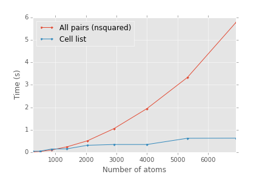

Comparing languages with miniapps
The Mantevo project provides a collection of miniapps, which are simplified versions of real scientific applications that make it easier to explore performance, scaling, languages, programming models, etc. I want to focus on the language aspect and port some apps to new languages to see how they compare.
The first miniapp I started with is CoMD, a molecular dynamics code in C.
For the language ports, I made multiple variants of increasing complexity.
- nsquared
- This uses the naive algorithm in computing inter-particle interactions. The central loop computes the interaction of every particle with every other particle. The scaling of run time vs number of particles is N2.
- cell
- The cell list method divides space into cells and tracks the particles in each cell. When computing interactions, only the particles in neighboring cells need to be considered. The scaling of run time vs. the number of particles is N.
- mpi
- Parallel version of the cell method.
The C version corresponds to the 'cell' and 'mpi' variants (plus the C version has OpenMP and several other programming model variants)
Currently there are Python and Julia ports for the nsquared and cell variants, and a Python version of the mpi variant. They are available in my 'multitevo' github repository: https://github.com/markdewing/multitevo
The Julia version is a pretty straightforward port of the Python version, so it is probably not very idiomatic Julia code. (I would be happy to take suggestions from the Julia community on how to improve the style and organization)
Scaling with system size
First let's verify the scaling of the nsquared version vs. the cell list version (using the Julia versions).

As expected, the cell list variant has better scaling at larger system sizes.
Initial performance
For a purely computational code such as this, performance matters. The ultimate goal is near C/Fortran speeds using a higher-level language to express the algorithm.
Some initial timings (for a system size of 4000 atoms, using the cell variant)
| Language/Compiler | Version | Time/atom (microseconds) |
|---|---|---|
| C - gcc | 4.8.2 | 2.3 |
| Julia | 0.3.11 | 153.0 |
| Julia | 0.4.0-dev+6990 | 88.8 |
| Python | 2.7.10 (from Anaconda) | 941.0 |
| Numba | 0.20.0 | 789.0 |
| Pypy | 2.6.1 | 98.4 |
(Hardware is Xeon E5-2630 v3 @ 2.4 Ghz, OS is Ubuntu 12.04)
Disclaimer: These numbers indicate how a particular version of the language and compiler perform on a particular version of this code. The main purpose for these numbers is a baseline to measure future performance improvements.
I tried HOPE, a Python to C++ JIT compiler. It require some modifications to the python code, but then failed in compiling the resulting C++ code. I also tried Parakeet. It failed to translate the Python code, and I did not investigate further.
It is clear when comparing to C there is quite a bit of room for improvement in the code using the high-level language compilers (Julia, Numba, PyPy). Whether that needs to come from the modifications to the code, or improvements in the compilers, I don't know yet.
The only real performance optimization so far has been adding type declarations to the composite types in Julia. This boosted performance by about 3x. Without the type declarations, the Julia 0.4.0 speed is about 275 us/atom. First performance lesson: Add type declarations to composite types in Julia.
Julia and Numba have a number of similarities and so I want to focus on improving the performance of the code under these two systems in the next few posts.
Comments
Comments powered by Disqus